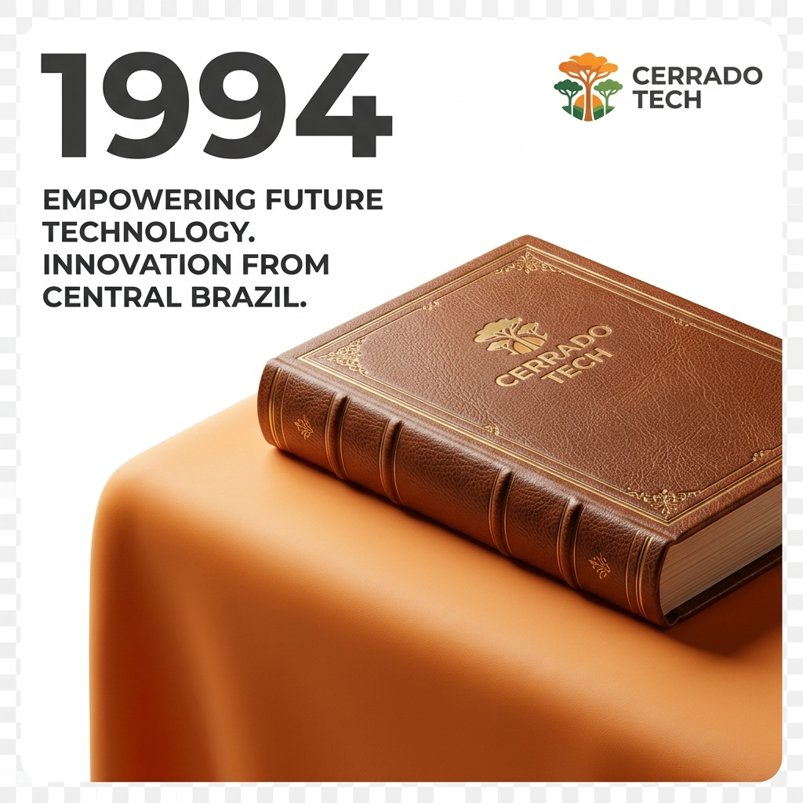

Tradição técnica e inovação contínua para manter a estabilidade da sua operação comercial B2B.
Fundada em Goiás, a Cerrado Tecnologia nasceu da necessidade de criar sistemas operacionais robustos para postos de combustíveis, um setor comercial caracterizado por complexidade fiscal diária e exigência de automação de hardware em tempo real.
Ao longo de mais de três décadas de experiência, consolidamo-nos como uma empresa especializada no desenvolvimento de soluções digitais, automação comercial, controle de acesso e gestão estratégica.
Hoje, expandimos nossa expertise para novos mercados como a hotelaria, resorts, pousadas e áreas de lazer, entregando sistemas eficientes que eliminam retrabalhos operacionais e garantem a segurança das informações comerciais.

Conhecimento profundo das regras fiscais brasileiras e integração avançada de hardwares comerciais físicos.
Evolução constante de softwares locais para ecossistemas em nuvem, dashboards analíticos e aplicativos móveis.
Suporte técnico ágil de verdade, realizado por telefone e conexões remotas imediatas com técnicos experientes.
Foco total em manter a estabilidade operacional da sua empresa para que suas atividades comerciais nunca parem.
Uma trajetória sólida de evolução tecnológica e expansão de mercado.
Início das operações em Goiás, focando em desenvolvimento de softwares sob demanda e soluções de retaguarda comercial.
Lançamento de módulos focados em automação física de bombas de combustíveis e concentradores industriais.
Desenvolvimento de rotinas integradas de conciliação bancária, auditorias de estoque físico e módulos fiscais robustos.
Expansão do portfólio tecnológico para o setor de hospitalidade, integrando hotéis, resorts e pousadas.
Lançamento de plataformas 100% web, dashboards gerenciais móveis, check-in digital e venda online por QR Code.
Entre em contato com nossa equipe técnica comercial para estruturarmos as melhores soluções para sua operação.
Falar com um Consultor